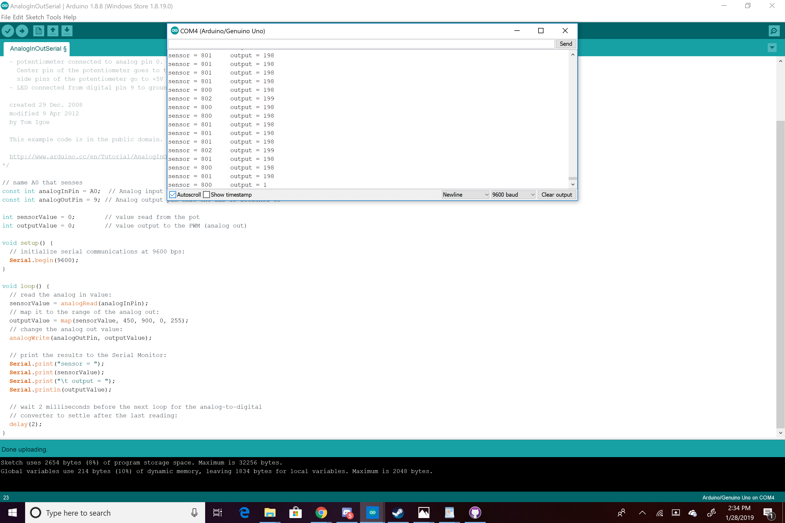

Sam's Assignment 3!
Schematic

This schematic shows the manner in which the resistors and LEDs were connected to the arduino and one another, as well as how the button was connected to a resistor and ground as well as pin 2 to sense its state. The resistors for the LEDs were 220 Ohm resistors because the arduino was putting out about 5V and each LED created a 3.3V drop for a total of 1.8V, with a desired current of 20mA 1.8V/0.02A=90 Ohms. The closest resistor to 90 I have without going under is 220. For the resistor on the part of the circuit that connects the 5V to LDR to ground I needed a resistor that would limit current when the LDR was at its minimum resistance. With a desired current of 20mA and a voltage of 5V (5V/.02A = 250 Ohms) 10K Ohms is more than enough to limit the current to what the arduino can handle.
Circuit

This circuit has two main parts: the LED and the LDR. The LED is connected to an analog write pin on the board that supplies varrying voltage to the LED. A resistor keeps the current to what the LED can handle. The sensor part of the circuit uses the 5V pin connected to the LDR with a connection to analog read pin 0 to sense the variation in voltage through the LDR then through a resistor and to the same ground as the LED. The V out can be calculated by the constant resistance from the resistor (10K) divided by the sum of the constant and variable resistance (LDR max 1M)times the V in. Given that, the minimum V out is 5V(10K/(1M+10K))= ~.05V.
Code Snippet
The following code keeps the LEDs fading in and out unless the button is held in which case they stay glowing bright until it is released.
// assign names to A0 and 9 to make clear which is input and
output in the code
const int analogInPin = A0;
const int analogOutPin = 9;
//value read from LDR
int sensorValue = 0;
//value output through pin 9
int outputValue = 0;
//runs once
void setup() {
// initialize serial communications at 9600 bps:
Serial.begin(9600);
}
//repeats
void loop() {
// read the analog in value
sensorValue = analogRead(analogInPin);
// map it to the range of the analog out
//by changing the first two number from the full 10-bit range
(0-1023) to closer to the parameters of input I saw was being
sensed
//in the serial monitor (450-900) it allows the full spectrum of
variation to be mapped to the 8-bit range (0-255)
outputValue = map(sensorValue, 450, 900, 0, 255);
// change the analog out value:
analogWrite(analogOutPin, outputValue);
// print label for sensor value
Serial.print("sensor = ");
//print sensor value
Serial.print(sensorValue);
//print label for output
Serial.print("\t output = ");
//print output value
Serial.println(outputValue);
// wait 2 milliseconds before the next loop for the analog-to-digital
// converter to settle after the last reading:
delay(2);
}
Serial Monitor Low and High Readouts

Circuit Operation